|
IdentityGuard Server 11.0 Administration Guide |
|
IdentityGuard Server 11.0 Administration Guide |
Use the following procedures to find user information.
● To search for information about one user
● To search for information about one or more users
To search for information about one user
1. Log in to the Entrust IdentityGuard Administration interface as the administrator.
 On the
Windows computer where Entrust IdentityGuard is installed
On the
Windows computer where Entrust IdentityGuard is installed
2. In the main menu, click User Accounts.
The User Account page appears.
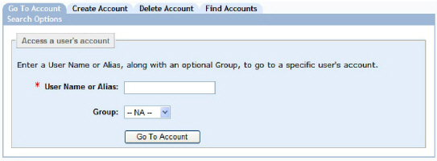
3. In the User Name or Alias field, enter the name or alias of a user.
4. Optional. In the Group list box, select the user’s group.
Note: If multiple users in your system have the same user name or alias, you must specify the group.
5. Click Go To Account.
The View Account page appears with account and authentication information for the specific user. For information about the actions you can perform from this screen, see Managing users.
To search for information about one or more users
1. Log in to the Administration interface (Logging in and out of the Administration interface).
2. In the main menu, click User Accounts.
The User Accounts page appears.

3. Click the Find Accounts tab.
4. Specify as many of the search options as necessary to reduce the search results to the exact records you need.
● To find users by user account information
● To find users by forced card or token activation
● To find users by knowledge-based authentication
● To find users by machine authentication
● To find users by IP/Geolocation history
● To find users by personal verification number
● To find users by temporary PIN authentication
● To find users by password authentication
● To find users by one-time password authentication
● To find users by certificate
● To find users by smart credential
5. To specify how many search results are displayed per page, select a number from the Showing results per page drop-down list.
6. Click Find Accounts.
The Search Results page displays all users that match your search criteria.
Note: You
can change the sort order of records in the Search
Results page. Click any column header to sort records by the
values in that column.
Only the entries on the current page are sorted; if there are multiple
pages of search results, only the one you are viewing is sorted.

To get details about a particular user, click the User Name to access that user’s account information.
To find users by user account information
1. To find users with a matching user name:
a. In the User Name Matches field, enter a user name.
When entering a user name, you can include one or more wildcard characters (*). For example, enter IG* to find all user names that begin with IG.
b. To also find users with an alias that matches the provided string, select Consider aliases as well.
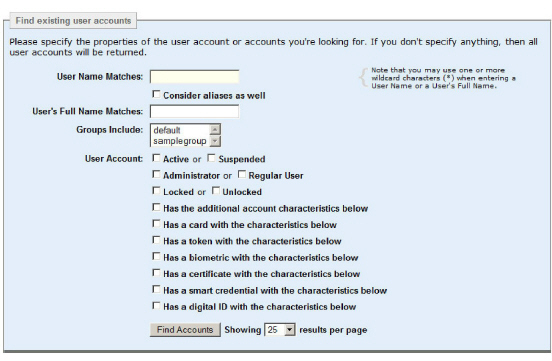
2. To find users by their full name, enter the name in the User’s Full Name Matches field.
When typing the user’s full name, you can include one or more wildcard characters (*). For example, enter Jo* to find all names that begin with Jo.
3. To find users who belong to specific groups, select one or more groups from the Groups Include list box. See Selecting options.
4. To search for users in a specific state, do one of the following:
a. To find users whose account is active, select Active.
b. To find users whose account is suspended, select Suspended.
5. To find a specific type of user, do one of the following:
a. To find Entrust IdentityGuard administrators, select Administrator.
The Roles list appears.
– To find administrators with specific roles, select the roles from the Roles list. If you do not select any roles, all administrators are returned. See Selecting options.
b. To find non-administrator users, select Regular User.
6. To find users based on whether their accounts are locked or unlocked, do one of the following:
a. To find users who are locked out of their account, select Locked.
b. To find users who are not locked out of their account, select Unlocked.
7. To find users by other account information, click Has the additional account characteristics below. The extended search pane appears.
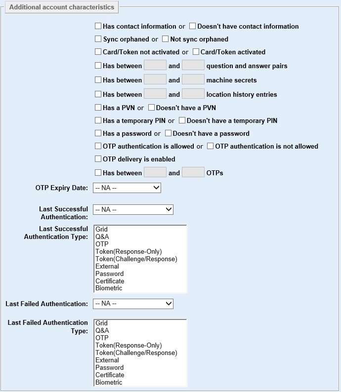
8. Make your selections to narrow down the search as required using the check boxes and minimum and maximum number pairs, as described in the following topics.
Note: The users found in these searches meet all the criteria specified. In other words, the search criteria are combined using the AND operation.
● To find users by whether or not they have contact information
● To find users by whether their accounts have been orphaned after synchronization with Active Directory
● To find users by forced card or token activation
● To find users by knowledge-based authentication
● To find users by machine authentication
● To find users by IP/Geolocation history
● To find users by personal verification number
● To find users by temporary PIN authentication
● To find users by password authentication
● To find users by one-time password authentication
● To find users by last authentication
● To find users by certificate
● To find users by smart credential
To find users by whether or not they have contact information
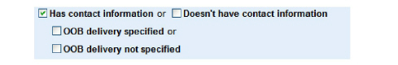
1. To find users who have contact information, select Doesn’t have contact information.
2. To find users who do not have contact information, select Has contact information.
More options appear.
● To find users for whom out-of-band delivery has been specified, select OOB delivery specified.
● To find users for whom out-of-band delivery has not been specified, select OOB delivery not specified.
To find users by whether their accounts have been orphaned after synchronization with Active Directory
1. To find user accounts that have been orphaned after synchronization with Active Directory, select Sync orphaned.
2. To find user accounts that have not been orphaned after synchronization with Active Directory, select Not sync orphaned.
The search results for orphaned users display No in the Available column. (A No value is also used to indicate whether a user is suspended, disable in the repository, or expired in the repository.)
For more information, see Manage orphaned user accounts.
To find users by forced card or token activation
For more information about forcing card or token activation, seeCreating grid cards.
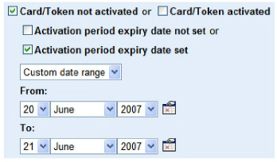
1. To find users who have activated a card or token, select Card/Token activated, or
2. To find users who have not activated a card or token, select Card/Token not activated.
More options appear. You can do one of the following.
● To find users who are not set for forced activation, select Activation period expiry date not set.
● To find users who are set for forced activation, select Activation period expiry date set and select a date range from the drop-down list.
If you selected Custom date range, choose a date range from the From and To drop-down lists (day, month, year), or click the calendar icons to select dates.
To find users by knowledge-based authentication
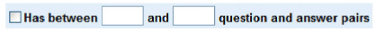
1. To find users with knowledge-based authentication data (question-and-answer pairs), select Has between [ ] and [ ] question and answer pairs, then do one of the following:
● To find users with at least one question and answer pair, enter 1 in the first text field.
● To find users with a minimum number of questions or more, enter the minimum number in the first text field and leave the second field blank.
For example, enter 3 in the first text field to find users with 3 or more question-and-answer pairs.
● To find users with a maximum number of questions or fewer (including zero (0)), enter the maximum number in the second text field.
For example, enter 4 in the second text field to find users with 4 or fewer question-and-answer pairs.
● To find users with any number of questions in a range, enter the minimum number in the first text field, and the maximum number in the second text field.
For example, to find users with 1, 2, or 3 question-and-answer pairs, enter 1 in the first text field and enter 3 in the second text field.
To find users by machine authentication
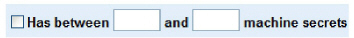
1. To find users with registered machines (machine secrets), select Has between [ ] and [ ] machine secrets, then do one of the following:
● To find users with at least one machine secret, enter 1 in the first text field.
● To find users with a minimum number of registered machines or more, enter the minimum number in the first text field.
For example, enter 3 in the first text field to find users with 3 or more registered machines.
● To find users with a maximum number of registered machines or fewer, enter the maximum number in the second text field and leave the first field blank
For example, enter 4 in the second text field to find users with 4 or fewer (including zero (0)) registered machines.
● To find users with any number of registered machines in a range, enter the minimum number in the first text field, and the maximum number in the second text field.
For example, to find users with 1, 2, or 3 registered machines, enter 1 in the first text field and enter 3 in the second text field.
To find users by IP/Geolocation history
1. To find users with location history entries, select Has between [ ] and [ ] location history entries, then do one of the following:
● To find users with at least one location history entry, enter 1 in the first text field.
● To find users with a minimum number of location history entries or more, enter the minimum number in the first text field.
For example, enter 3 in the first text field to find users with 3 or more location history entries.
● To find users with a maximum number of location history entries or fewer (including zero (0)), enter the maximum number in the second text field.
For example, enter 4 in the second text field to find users with 4 or fewer location history entries.
● To find users with any number of location history entries in a range, enter the minimum number in the first text field, and the maximum number in the second text field.
For example, to find users with 1, 2, or 3 location history entries, enter 1 in the first text field and enter 3 in the second text field.
To find users by personal verification number
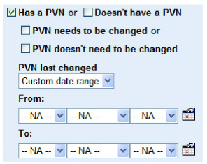
1. To find users without a personal verification number, select Doesn’t have a PVN, or
2. To find users who have a personal verification number (PVN), select Has a PVN.
More options appear.
a. You can do one of the following:
– To find users who need to change their PVN, select PVN needs to be changed.
– To find users who do not need to change their PVN, select PVN doesn’t need to be changed.
b. To find users who last changed their PVN within a specific date range, select a date range from the PVN last changed drop-down list.
If you selected Custom date range, choose a date range from the From and To drop-down lists (day, month, year), or click the calendar icons to select dates.
To find users by temporary PIN authentication
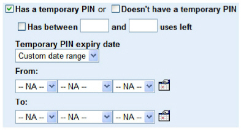
1. To find users without a temporary PIN, select Doesn’t have a temporary PIN, or
2. To find users with a temporary PIN, select Has a temporary PIN.
More options appear.
a. To find users with a specified number of allowed temporary PIN uses remaining, select Has between [ ] and [ ] uses left, then do one of the following:
– To find users with a minimum number of uses left or more (including unlimited uses), enter the minimum number in the first text field.
For example, enter 3 in the first text field to find users with 3 or more uses left (including unlimited uses).
– To find users with a maximum number of uses remaining or fewer (including zero (0)), enter the maximum number in the second text field.
For example, enter 2 in the second text field to find users with 2 or fewer uses left.
– To find users with any number of uses remaining in a range, enter the minimum number in the first text field, and enter the maximum number in the second text field.
For example, to find users with 1, 2, or 3 uses remaining, enter 1 in the first text field and 3 in the second text field.
b. To find users whose temporary PIN expires within a specific date range, select a date range from the Temporary PIN expiry date drop-down list. This could be an expiry date in the past (the PIN has already expired), or in the future.
If you selected Custom date range, choose a date range from the From and To drop-down lists (day, month, year), or click the calendar icons to select dates.
To find users by password authentication
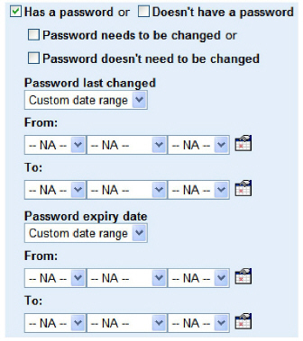
1. To find users without a password, select Doesn’t have a password.
or
2. To find users who have a password, select Has a password.
More options appear.
a. To find users who need to change their password, select Password needs to be changed.
b. To find user who do not need to change their password, select Password doesn’t need to be changed.
c. To find users who last changed their password within a specific date range, select a date range from the Password last-changed drop-down list.
If you select Custom date range, choose a date range from the From and To drop-down lists (day, month, year), or click the calendar icons to select dates.
d. To find users whose password expires within a specific date range, select a date range from the Password expiry date drop-down list. The expiry date can be in the past (the password has already expired), or in the future.
If you selected Custom date range, choose a date range from the From and To drop-down lists (day, month, year), or click the calendar icons to select dates.
To find users by one-time password authentication
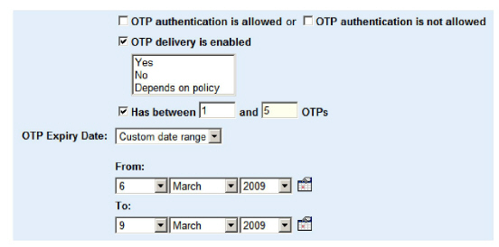
1. You can do one of the following:
● To find users allowed to authenticate with a one-time password, select OTP authentication is allowed.
● To find users not allowed to authenticate with a one-time password, select OTP authentication is not allowed.
2. To find users who are allowed or not allowed to receive a one-time password by an out-of band delivery mechanism, select OTP delivery is enabled.
More options appear. You can select one or more of the following:
● To find users who are allowed to receive a one-time password by an out-of-band delivery mechanism, select Yes.
● To find users who are not allowed to receive a one-time password by an out-of-band delivery mechanism, select No.
● To find users who let their group’s policy determine whether they are allowed or not allowed to receive a one-time password by an out-of-band delivery mechanism, select Depends on policy.
3. To find users with a specified number of one-time passwords, select Has between [ ] and [ ] OTPs, then do one of the following:
● To find users with at least one OTP, enter 1 in the first text field.
● To find users with a minimum number of OTPs or more (including unlimited OTPs), enter the minimum number in the first text field.
For example, enter 3 in the first text field to find users with 3 or more OTPs.
● To find users with a maximum number of OTPs or fewer (including zero (0)), enter the maximum number in the second text field.
For example, enter 2 in the second text field to find users with 2 or fewer OTPs.
● To find users with any number of OTPs in a range, enter the minimum number in the first text field, and enter the maximum number in the second text field.
For example, to find users with 1, 2, or 3 OTPs, enter 1 in the first text field and 3 in the second text field.
4. To find users by their OTP expiry date, choose the time frame from the OTP Expiry Date drop-down list.
If you select Custom date range, choose a date range from the From and To drop-down lists (day, month, year), or click the calendar icons to select dates.
Note: Even if a user is allowed to receive a one-time password by an out-of-band delivery mechanism, the user must have contact information associated with their user account to receive the one-time password. To find users with contact information, see To find users by whether or not they have contact information.
To find users by last authentication
Note: To use this search, the policy that allows storage of last authentication data must be enabled. This policy is enabled by default. See Store Type and Date of Last Authentication for details.
1. To find users (or administrators) by their last successful authentication date, select the time interval from the Last Successful Authentication drop-down list.
You can choose to search for the last successful authentication within the time interval. You can also choose to look for users who have not authenticated successfully within the selected time period.
If you do not select any authentication types, the search results will include the last successful authentications of any authentication type.

2. To find users by their last successful authentication type, select one or more authentication types from the Last Successful Authentication Type selection list.
3. To find users by the date of their last failed authentication, select the time interval from the Last Failed Authentication drop-down list.
You can choose to search for the last failed authentication within the time interval. You can also choose to look for users who have not failed authentication within the selected time period.
If you do not select any authentication types, the search results will include the last failed authentications of any authentication type.
4. To find users by the authentication method used for their last failed authentication, select one or more authentication types from the Last Failed Authentication Type selection list.
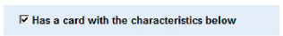
1. To find users with cards, select Has a card with the characteristics below.
The Card characteristics pane appears.
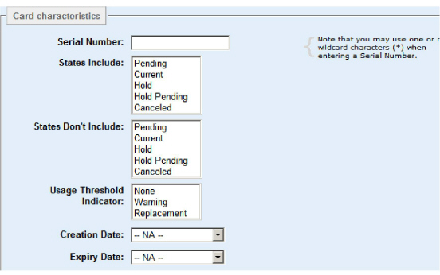
2. To find users by their card serial number, enter the serial number in the Serial Number field. Wild cards are allowed, so you can enter 11*, for example, to search for all users with grid card serial numbers beginning with “11”.
3. To find users by their card states, select the card states from the States Include and States Don’t Include lists. You can select more than one state from the list.
4. To find users by the threshold indicator, select from the Usage Threshold Indicator list. You can select one or more of the options.
For example, if you want to find all users with cards that need to be replaced, select Replacement.
5. To find users by their card creation date, select a card creation time frame from the Creation Date drop-down list.
If you select Custom date range, choose a date range from the From and To drop-down lists (day, month, year), or click the calendar icons to select dates.
6. To find users by their card expiry date, select a card expiry time frame from the Expiry Date drop-down list.
If you select Custom date range, choose a date range from the From and To drop-down lists (day, month, year), or click the calendar icons to select dates.
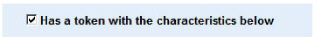
1. To find users with tokens, select Has a token with the characteristics below.
The Token characteristics pane appears.
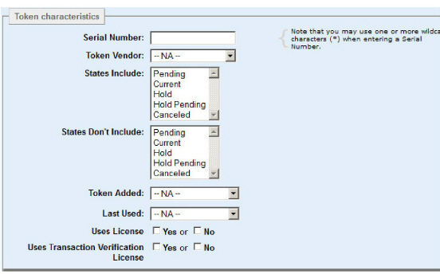
2. To find users by their token serial number, enter the serial number in the Serial Number field. Wild cards are allowed, so you can enter 11*, for example, to search for all users with token serial numbers beginning with “11”.
3. To find users with tokens from a particular vendor, select the vendor from the Token Vendor list.
4. To find users by their token states, select the token states from the States Include and States Don’t Include lists. You can select more than one state from the list.
5. To find users by their the date their token was added to Entrust IdentityGuard, select a time frame from the Token Added drop-down list.
If you select Custom date range, choose a date range from the From and To drop-down lists (day, month, year), or click the calendar icons to select dates.
Note: The Token Added date is the date the token was loaded into Entrust IdentityGuard, not the date it was assigned to a user.
6. To find users by the date they last used their token, select a time frame from the Last Used drop-down list.
If you select Custom date range, choose a date range from the From and To drop-down lists (day, month, year), or click the calendar icons to select dates.
7. To find users by whether or not they have a soft token license, next to Uses License, select Yes if the user has a soft token and uses a Soft Token license, or No if it they do not.
8. To find users by whether or not they have a soft token that is licensed to use the transaction verification feature, next to Uses Transaction Verification License, select Yes if the user uses the transaction verification feature or No if they do not.
1. To find users with biometrics, select Has a biometric with the characteristics below.
The Biometric characteristics pane appears.
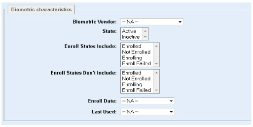
2. To find users by the biometric vendor, select the vendor from the Biometric Vendor drop-down list. The list is not shown if there is only one vendor in the system.
3. To find users by the state of their biometric, select one or more of the states, Active or Inactive, from the State drop-down list:
4. To find users by their biometric enrollment state, select one or more of the states from the Enroll States Include drop-down list:
5. To find users by the date on which they enrolled a biometric, select a time frame from the Enroll Date drop-down list.
If you select Custom date range, choose a date range from the From and To drop-down lists (day, month, year), or click the calendar icons to select dates.
6. To find users by the date on which they last used a biometric for authentication, select a time frame from the Last Used drop-down list.
If you select Custom date range, choose a date range from the From and To drop-down lists (day, month, year), or click the calendar icons to select dates.
1. To find users with certificates, select Has a certificate with the characteristics below.
The Certificate characteristics pane appears.
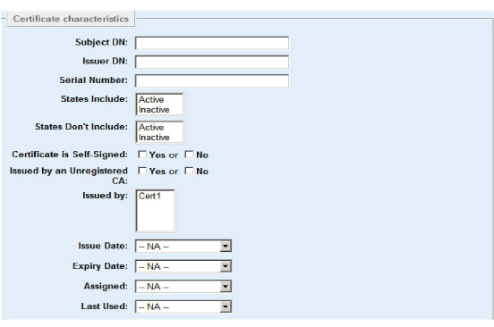
2. To find users by the subject DN of certificates assigned to them, enter the DN in Subject DN.
3. To find users by the issuer DN of certificates assigned to them, enter the DN in Issuer DN.
4. To find users by their certificate serial number, enter the serial number in Serial Number.
5. To find users by their certificate states, select the certificate states from the States Include and States Don’t Include lists.
6. To find users with certificates that are self-signed, select Yes beside Certificate is Self-Signed.
To find users with certificates that are not self-signed, select No beside Certificate is Self-Signed.
7. To find users with certificates that were issued by an unregistered Certificate Authority (CA), select Yes beside Issued by Unregistered CA.
To find users with certificates that were issued by a registered Certificate Authority (CA), select No beside Issued by Unregistered CA.
8. To find users with certificates issued by a specific CA or CAs, select the CAs from the Issued by list.
9. To find users by the date their certificate was issued, select a time frame from the Issue Date drop-down list.
If you select Custom date range, choose a date range from the From and To drop-down lists (day, month, year), or click the calendar icons to select dates.
10. To find users by the expiry date of their certificate, select a time frame from the Expiry Date drop-down list.
If you select Custom date range, choose a date range from the From and To drop-down lists (day, month, year), or click the calendar icons to select dates.
11. To find users by their the date their certificate was assigned to them, select a time frame from the Assigned drop-down list.
If you select Custom date range, choose a date range from the From and To drop-down lists (day, month, year), or click the calendar icons to select dates.
12. To find users by the date they last used their certificate, select a time frame from the Last Used drop-down list.
If you select Custom date range, choose a date range from the From and To drop-down lists (day, month, year), or click the calendar icons to select dates.
To find users by smart credential

1. To find users with certificates, select Has a smart credential with the characteristics below.
2. The Smart credential characteristics pane appears.

3. To find users by their smart credential ID, enter the ID in Smart Credential ID.
4. To find users by their smart credential serial number, enter the serial number in Serial Number.
5. To find users by their smart credential states, select the smart credential states from the States Include and States Don’t Include lists. For more information on states, see “Assigned (user) smart credential states” in the Entrust IdentityGuard Smart Credentials Guide.
6. To find users by their smart credential definition, select one of the existing definitions from the Definition drop-down list.
7. To find users by their smart credential enrollment state, select one of the states from the Enrollment state drop-down list:
● Enrolling. A smart credential is in this state as soon as all required enrollment data is collected. The smart credential then automatically moves to the Enrolled state.
● Enrolled. A smart credential is in this state when a new smart credential enrollment has been submitted, but is not yet approved.
Note: If you are not using the approval feature, the smart credential is automatically approved upon submission and moves to the Approved state.
● Approved. A smart credential is in this state when the administrative user with the Smart Credential Approver role (or equivalent permissions) approves the smart credential record.
● Sealed. Optional. A smart credential is in this state when the administrator manually clicks Seal after printing and/or encoding. Generally, this occurs just before distributing the smart credential to the employee. This seals the record in the database so that it cannot be edited, reprinted, or re-encoded.
8. To find users by their smart credential card type or mobile device brand, select one of the states from the Card Type drop-down list. Options include:
– Android, Apple iOS and BlackBerry devices for software mobile smart credentials
– Infineon, NXP, or Unknown for physical smart cards
9. To find users by the date their smart credential was created, select a time frame from the Creation Date drop-down list.
If you select Custom date range, choose a date range from the From and To drop-down lists (day, month, year), or click the calendar icons to select dates.
10. To find users by the expiry date of their smart credential, select a time frame from the Expiry Date drop-down list.
If you select Custom date range, choose a date range from the From and To drop-down lists (day, month, year), or click the calendar icons to select dates.
11. To find users by whether or not they have a mobile smart credentials license, next to Mobile License, select Yes if the user has a mobile smart credential and uses a mobile smart credentials license, or No if it they do not.
12. To find users by whether or not they have a mobile smart credential that is licensed to use the Identity Assured features, next to Identity Assured License, select Yes if the user uses the identity assured features on their mobile smart credential, or No if they do not.
13. To find users by enrollment details, select the Enrollment Details check box. Complete one of more of the fields that appear. The fields that appear are dynamic, and based on the definition or definitions configured in IdentityGuard.
14. To find users by enrollment details, select the Issuance Details check box. Select one of more of the following options:
● Issuance Status Includes: The options provided are based on your Print Module configuration. For more information on issuance status, see the Entrust IdentityGuard Print Module User Guide.
● Issuance Status Doesn’t Include: The options provided are based on your Print Module configuration. For more information on issuance status, see the Entrust IdentityGuard Print Module User Guide.
● To find users by the date their smart credential was issued, select an issuance time frame from the Issuance Date drop-down list.
If you select Custom date range, choose a date range from the From and To drop-down lists (day, month, year), or click the calendar icons to select dates.
1. To find users with digital IDs, select Has a digital ID with the characteristics below.
The Digital ID characteristics pane appears.
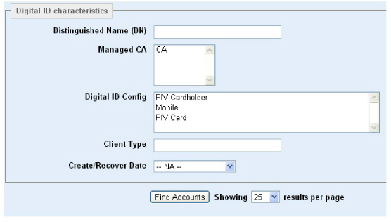
2. To find users by the DN of digital IDs assigned to them, enter the DN in Distinguished Name (DN). Enter a full DN or partial DN of the users. For example, o=Ottawa,c=CA finds users with cn=Alice Smith,o=Ottawa,c=CA and cn=Bob Jones,o=Ottawa,c=CA in their DNs.
3. To find users by managed CA, select the managed CA from the Managed CA drop-down list.
4. To find users by the configuration of their digital ID, select the configuration from the Digital ID Config drop-down list.
5. To find users by digital ID client type, enter the name of a client type in Client Type. A client type is any piece of information set by an Entrust IdentityGuard client and passed to Entrust IdentityGuard server. For example, the Self-Service Module sets the client type to the brand of mobile device on which a digital ID is being downloaded. You can therefore use the Client Type field to search for digital IDs that have been downloaded to particular mobile devices. The client type values set by the Self-Service Module are: android, blackberry, blackberryTablet, iOS, windowsPhone.
The Client Type maps to the Device Type Value property listed in the Self-Service Module’s Configuration interface, under Properties > Digital ID Device Type Settings.
6. To find users by the date that there digital ID was created or recovered, select a time frame from the Create/Recover Date drop-down list. (Recovered is another word for ‘re-created’.)
If you select Custom date range, choose a date range from the From and To drop-down lists (day, month, year), or click the calendar icons to select dates.